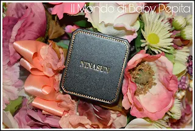
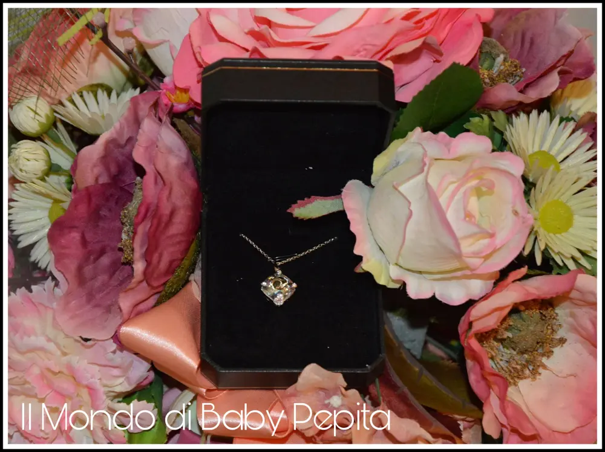
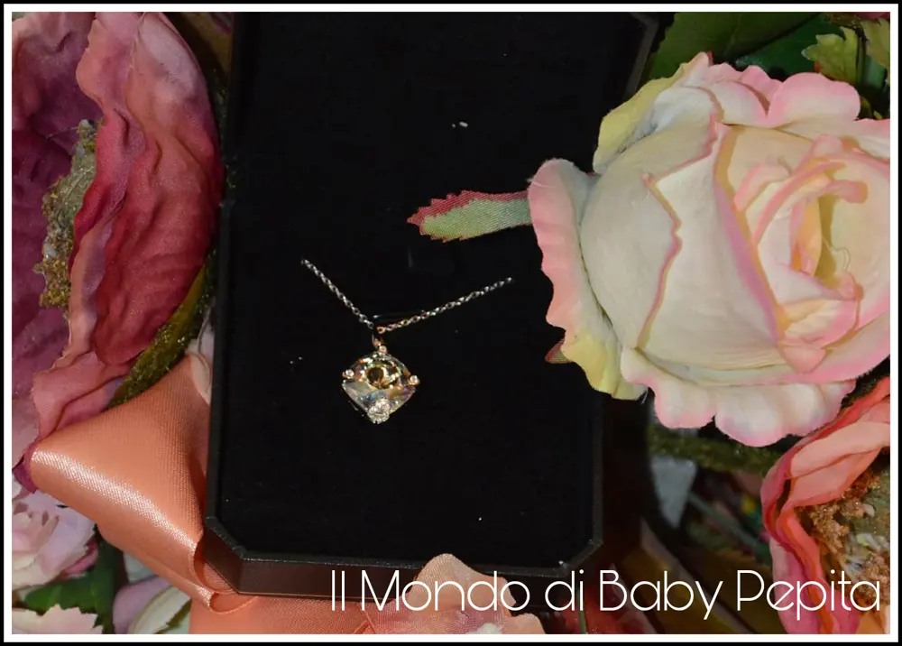
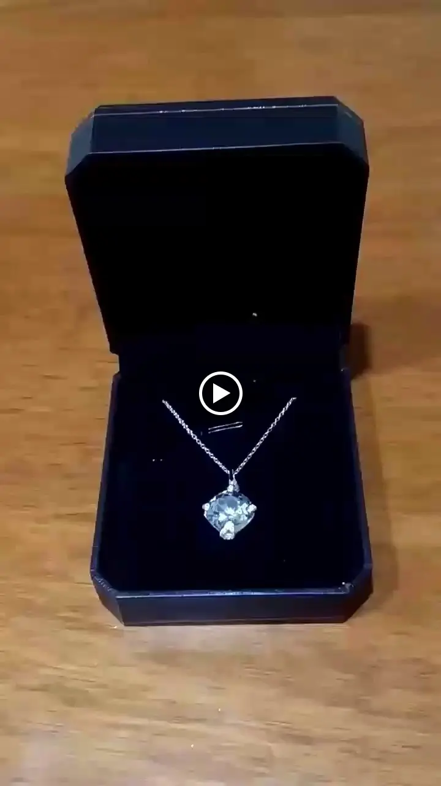
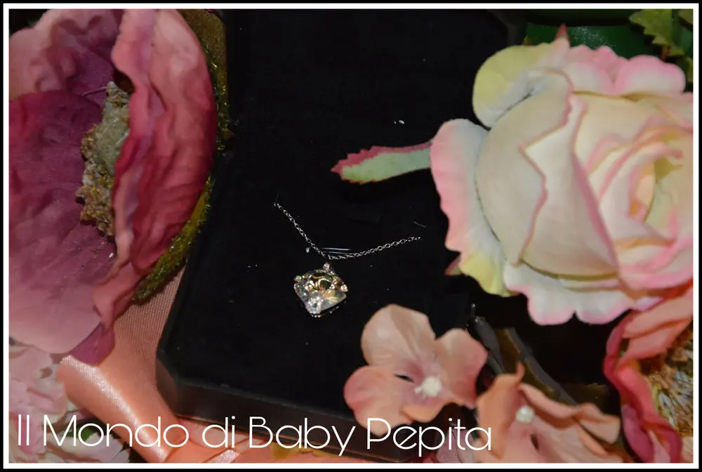

NINASUN - collana "Aquilone" 925 Argento

Oggi vi mostro un gioiello. . Un bel gioiello accessibile a tutti e di effetto firmato NINASUN.
Vi parlo di una collana molto particolare dal design raffinato ed elegante.
Già dalla confezione possiamo notare quanto è bello anche per un regalo, in una scatola a scatto tutta nera con un filo oro.
All'interno, ben protetto, troviamo la collana con questo gioiellino adagiata su un vellutino nero. In argento sterling 925 completa di catenina molto semplice e sottile.

(Lucia Serlenga, Daniela Fedi)
La forma del ciondolo è a forma di un aquilone di circa 2 centimetri.

La collana invece è lunga circa 45 centimetri, perfetta da indossare su vestitini per una bella serata.
La chiusura è quella classica a moschettone.
Colore della pietra è tra il rosa pallido e azzurro chiaro. Diciamo ha riflessi che illuminano tantissimo.

Intorno alla pietra sono incastonati dei brillantini bianchi luminosi.
Sul retro invece troviamo una lavorazione diversa anch'essa particolare fatta apposta per risaltare la lucentezza del gioiello sul davanti.

Mi è piaciuta molto per la semplicità e la particolarità questa stupenda collana. Ideale anche da indossare su un look casual giornaliero.
Materiale: 925 argento sterlina
Lunghezza: 44 cm
È regolabile Formato del pendente: 2.2 cm * 1.5 cm
Il colore del pendente può variare tra questo che ho io oppure con uno tutto blu.
Io sinceramente trovo bellissimo questo tra il rosa, azzurro e giallo.
Fine ed elegante.
Prezzo: 22,99 €
Dove acquistare : NINASUN